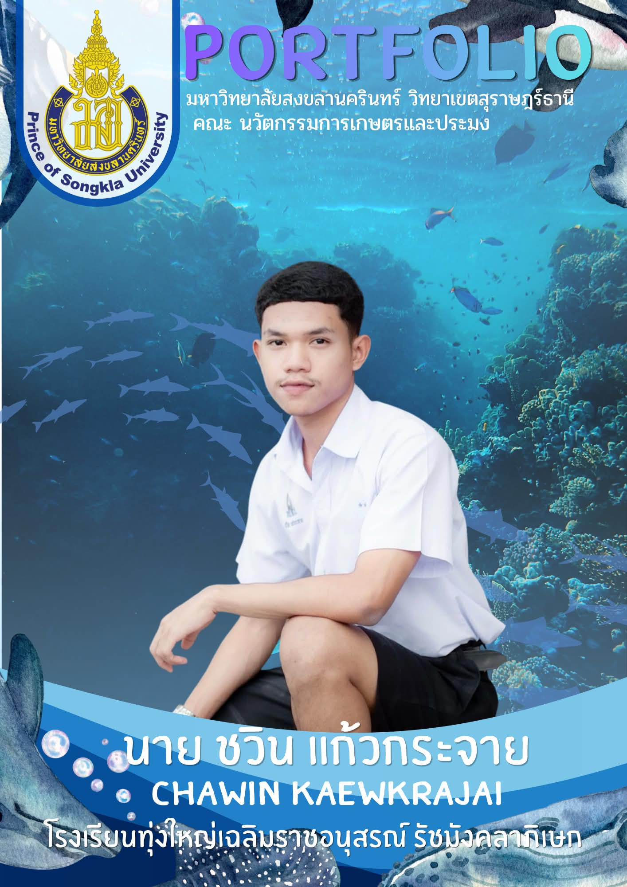
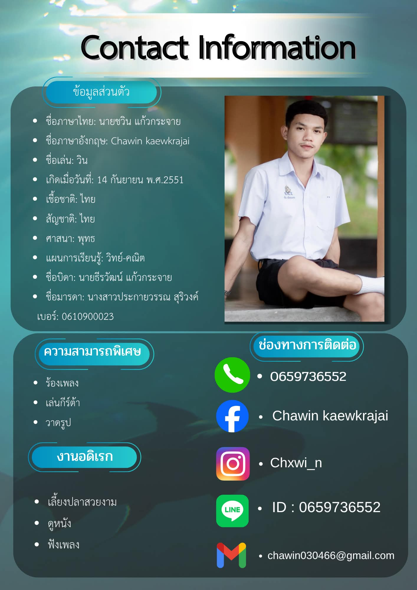
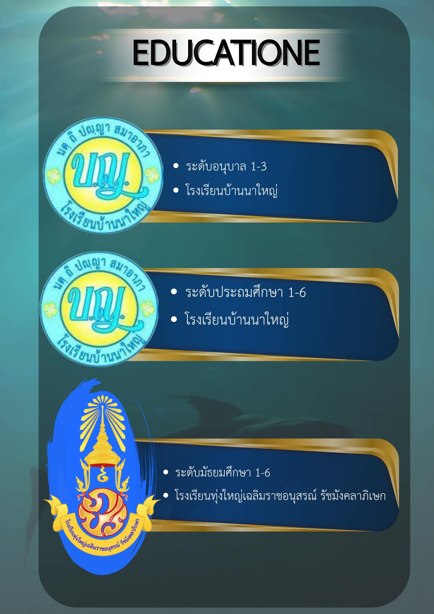
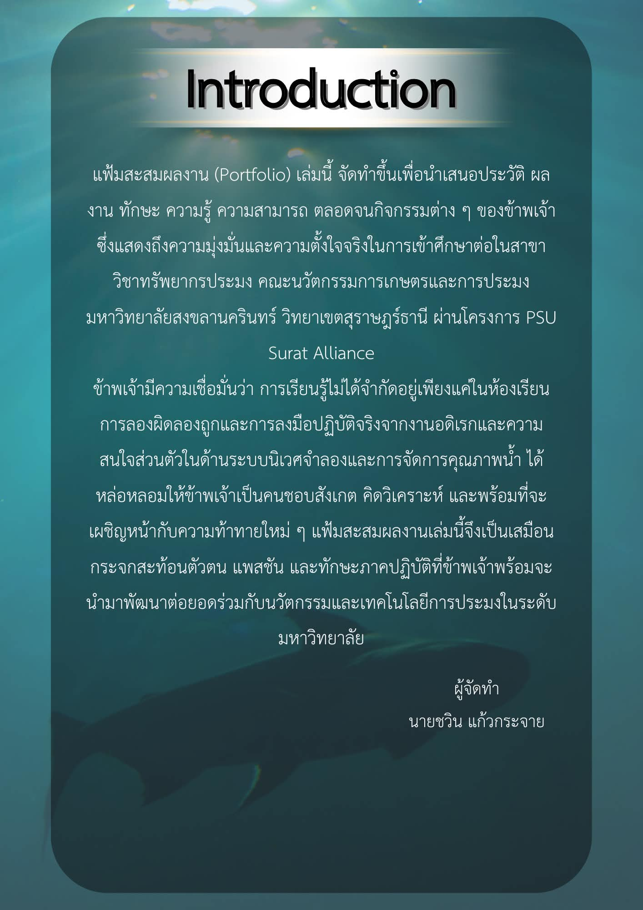
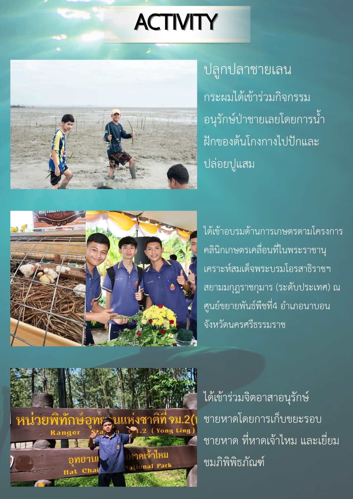
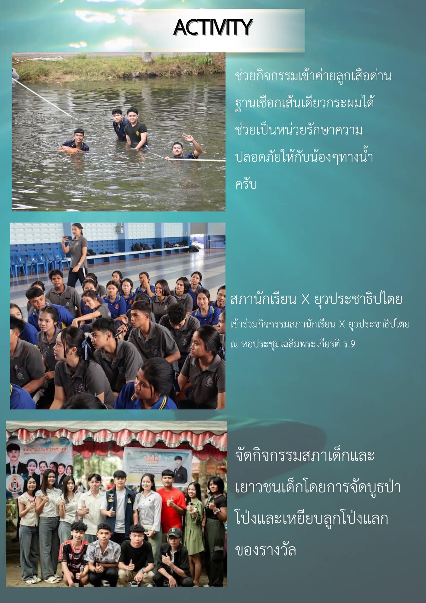

หน้าปก Portfolio

ข้อมูลส่วนตัวและช่องทางการติดต่อ | Contact Information

ประวัติการศึกษา | Education

คำนำ | Introduction

กิจกรรม | Activity
กิจกรรมอนุรักษ์ธรรมชาติ จิตอาสา และกิจกรรมพัฒนาสังคม

